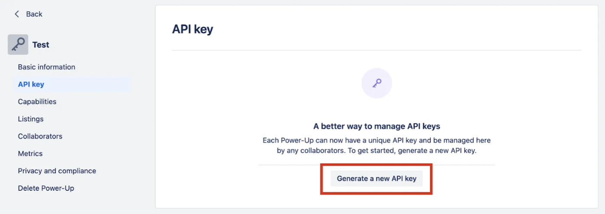

Trello API: Setting Up OAuth 2.0 Authentication
Trello now requires OAuth 2.0 for authentication. This method ensures secure access to Trello's API while improving security and user control.
Step 1: Create a Trello Account
If you don’t have a Trello account, create one at Trello’s website.
Step 2: Access the Power-Up Admin Portal
To generate an API key, you must create a Power-Up. Visit the Power-Up Admin Portal and click on New to create a Power-Up.
Step 3: Generate an API Key
Once inside your Power-Up page, click on Generate a new API key.

Step 4: Retrieve Your API Key & Set Up Security
Your API key will be displayed. Copy and store it securely. You can also configure the following settings:
- Allowed Origins: Define trusted domains that can use your API key.
- API Secret: Add an extra security layer to your API key.
Step 5: Obtain an OAuth 2.0 Access Token
Use OAuth 2.0 to get an access token:
POST https://trello.com/1/OAuthGetAccessToken
Content-Type: application/x-www-form-urlencoded
client_id=YOUR_CLIENT_ID
&client_secret=YOUR_CLIENT_SECRET
&code=AUTHORIZATION_CODE
&redirect_uri=YOUR_REDIRECT_URIStep 6: Use the Access Token in API Requests
Attach the token when making API requests:
GET https://api.trello.com/1/members/me?token=YOUR_ACCESS_TOKENCommon Errors & Solutions
| Error Code | Possible Cause | Solution |
|---|---|---|
| 400 Bad Request | Invalid Client ID or Secret | Verify credentials in Trello Developer Portal. |
| 401 Unauthorized | Access Token Expired | Re-authenticate and obtain a new token. |
| 403 Forbidden | Insufficient Permissions | Ensure your app has the correct scopes (e.g., read, write). |